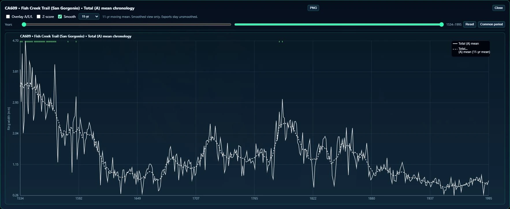
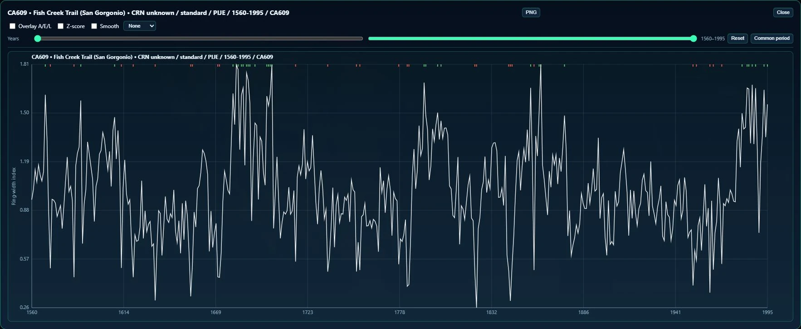

Review the records
InputRWL + CRN + metadata
ProcessParse / review / identify
OutputReviewed research library
Review ring-width files, keep original measurements and units visible, and record the source files used for each import.
I built a research workspace for inspecting tree-growth measurements, comparing climate records, and exporting selected data with its units, settings, and source history.
Project at a glance ↓

Tree rings preserve annual growth measurements, often across decades or centuries. Labs may receive different file formats, measurement types, site descriptions, and climate records. TRAE brings those materials into one workspace for inspection and comparison while keeping the original files and source history available.
I independently created the early prototype in response to Torbenson Lab’s research needs, demonstrated it, and earned a paid research assistant appointment to continue development. I maintain the application and its companion tools.
I used TRAE to derive summaries, organize study data, and prepare exports for a co-authored manuscript in preparation. The application supports analysis; its exploratory screens are not a substitute for scientific validation.
Selecting a site links its map location to plots and summaries. Raw ring-width measurements record total growth, earlywood formed earlier in the growing season, and latewood formed later. Imported chronology (CRN) values are already standardized summaries, so TRAE keeps them separate from measurements in millimeters. Chart smoothing changes only the display; saved source measurements and exports remain unchanged.
Researchers can compare records, inspect which years each series covers, and screen for climate associations. A site mean is the year-by-year average across available tree series. LWa is a simple same-year model residual used to screen how latewood relates to earlywood; it does not identify a proven biological cause. Expressed Population Signal (EPS) estimates how consistently the available raw tree series share a common pattern; here it is a screening measure, not validation of a standard chronology. Pearson’s correlation measures linear co-variation; it cannot show that climate caused a growth change. These exploratory screens do not adjust for all time-series dependence or multiple comparisons, so chronology development and climate interpretation require further research.
Climate Builder converts monthly observations into annual or seasonal summaries using visible month, year-assignment, and completeness settings. PRISM supplies gridded climate maps; TRAE samples their values at tree-site locations and records which source and settings produced each table.
The NetCDF companion inspects variables in a scientific file format used for multidimensional data and previews eligible annual series; it is not a full raster-analysis tool. ROXAS Prep packages output from wood-anatomy image analysis but does not perform that image analysis. The WalDendro YEAR tool organizes year-labeled X-ray density blocks, reports missing or duplicate years, and writes a reviewed copy without changing the original measurements.
An optional local AI helper extracts quoted clues from the current import-review text. TRAE checks whether each clue appears in the supplied row and field; a researcher decides whether to change metadata. The helper does not edit measurement values.
Temporary imports support quick inspection; reviewed managed imports add reusable library records. Parser warnings, measurement units, identity conflicts, and missing metadata are exposed for review. Original files and import records make the source traceable; SHA-256 fingerprints can reveal whether a file’s bytes changed, but they do not establish that its measurements are scientifically correct.
Shareable .TRAE session files save the current view, temporary imports, climate choices, selected sites, and notes; the managed research library remains separate. Researchers can export tables, geographic data, screening reports, and analysis bundles with R, Python, or MATLAB loader scripts. Export notes record which data, units, and settings were selected.
Explore each stage of the work.
Review ring-width files, keep original measurements and units visible, and record the source files used for each import.
Sample PRISM or assemble monthly observations into explicit annual and seasonal targets.
Companion tools organize climate files, wood-anatomy output, and year-labeled X-ray data into reviewed copies and reports.
A selected set of sites can be exported with its tables, map locations, source files, units, and analysis settings.